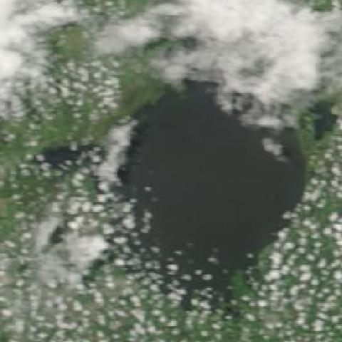

NASA Space Apps 2026 · Be An Earth System Trend Detective!
Satellites say Florida's lakes are getting greener. We cross‑examined the witness.
[TEAM NAME] · [MEMBER NAMES]

Our question: is the rise in the lakes, or in the instrument? A detective needs a second witness.
CyAN project (EPA, NASA, NOAA, USGS). Archived at NASA OB.DAAC (DOI 10.5067/S3A/OLCI/L3M/ILW/5.0). Sensor: ESA Sentinel‑3 OLCI.
Weekly, 121 lakes, 2020–2026
Water Quality Portal (USGS/EPA): Florida LAKEWATCH volunteers, FDEP, counties.
samples inside 115 of the lakes, 2000–2026
Air temperature and rainfall via the NASA POWER API, 1981–2025. Warm seasons warmed at every lake: + °C per decade.
Regional air, not lake water
True‑colour imagery from NASA Worldview / GIBS.
The eye can't see what the index sees
Plus EPA's archived weekly cyanoHAB forecast (2025–26) for the decision test on slide 6.
4 / 7Field chlorophyll rose too: +% per year, 2020–2025 (95% CI ; lakes). The satellite rise is corroborated by the rule we fixed in advance.
But for the same field chlorophyll, the satellite reads higher each year: + points per year (95% CI ; same‑week matchups).
Suspects still standing: instrument or processing drift, a real shift toward cyanobacteria that total chlorophyll can't see, or changes in sampling.
5 / 7Brier score, lower is better. But the answer key and the rival come from the same instrument.
Ranking skill for finding chlorophyll ≥ 12 µg/L. Difference: .
Lesson: our own first result was flattered by grading the satellite against itself. Field truth is the fairer judge, for trends and for forecasts.
6 / 7Open code and data: [REPO URL] · Live tool: [PUBLIC URL] · Built with help from an AI assistant (Anthropic's Claude); all results checked against the source data. No AI‑generated images.
7 / 7